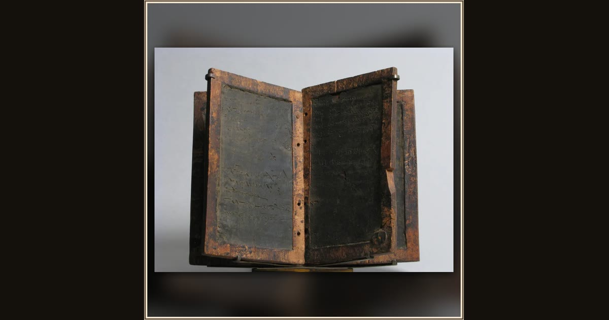

Wooden Writing Tablets
Coptic · 500–700 · met
A set of wooden tablets with writing scratched into their wax surfaces, the kind of block of wax Socrates imagines in the soul, taking impressions of what we perceive (191c) Explore its place in Plato's Dialogues, Theaetetus, section 247.